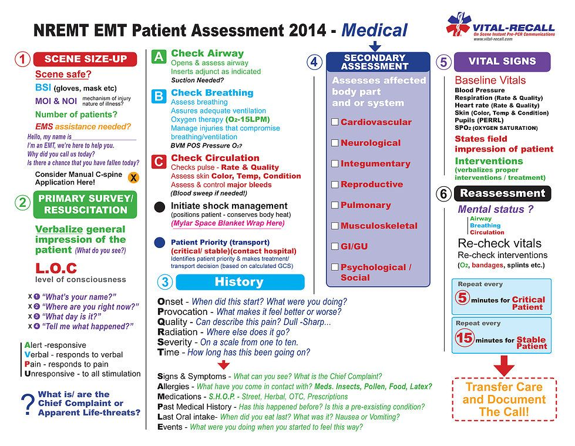

I don't want to mess with the system, but it always nice to know how the system works.
EMT
- Activated Charcoal
- Albuterol
- Aspirin
- Epinephrine, 1:1,000 via EpiPen® or vial
- Nitroglycerin (Tablet or Spray)
- Oral Glucose Gel
- Oxygen
- Tylenol
Homeless shelters California and open carry.
Chicfila
https://www.earthclassmail.com/addresses/ga/atlanta/
https://info.legalzoom.com/legally-change-name-georgia-20538.html
In nearly all states, a person cannot choose a name that is intended to mislead (such as adopting a celebrity's name), that is intentionally confusing, or that incites violence
